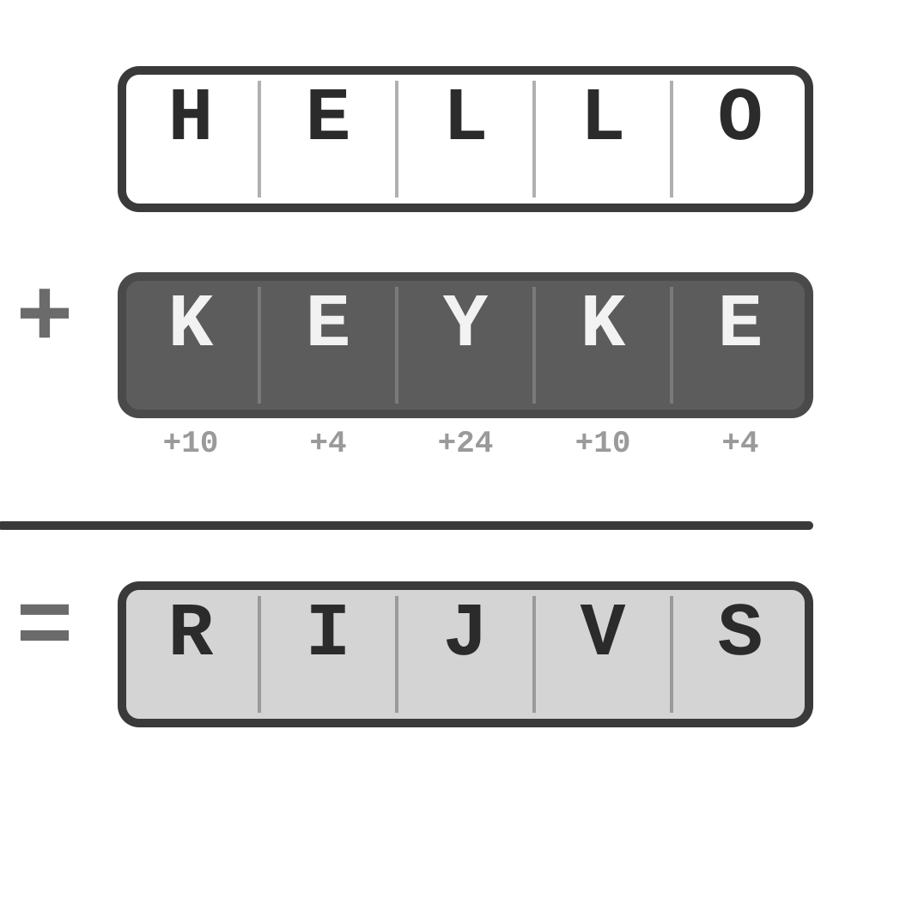

Let's Talk
Cryptography
Vigenère Cipher
The Vigenère Cipher is an encryption algorithm in which each letter of the message is encoded with a different Caesar cipher, whose shift is defined by the corresponding letter of the key. Therefore, the Vigenère cipher has several Caesar ciphers in sequence with different shift values.
Typically, spaces and punctuation are removed before encoding. If the recipient knows the key, they can recover the message by reversing the process. The method was first described by Giovan Battista Bellaso in 1553. Despite the ease of understanding and implementation, the cipher resisted all attempts to break it until 1863.
Source: WIKIPEDIA
